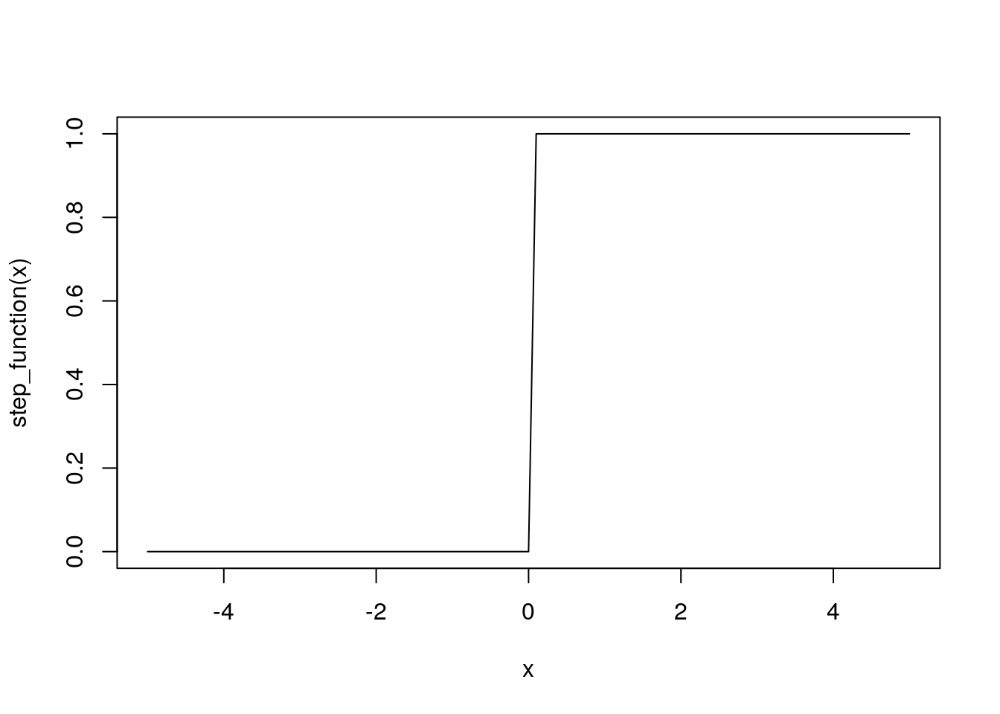
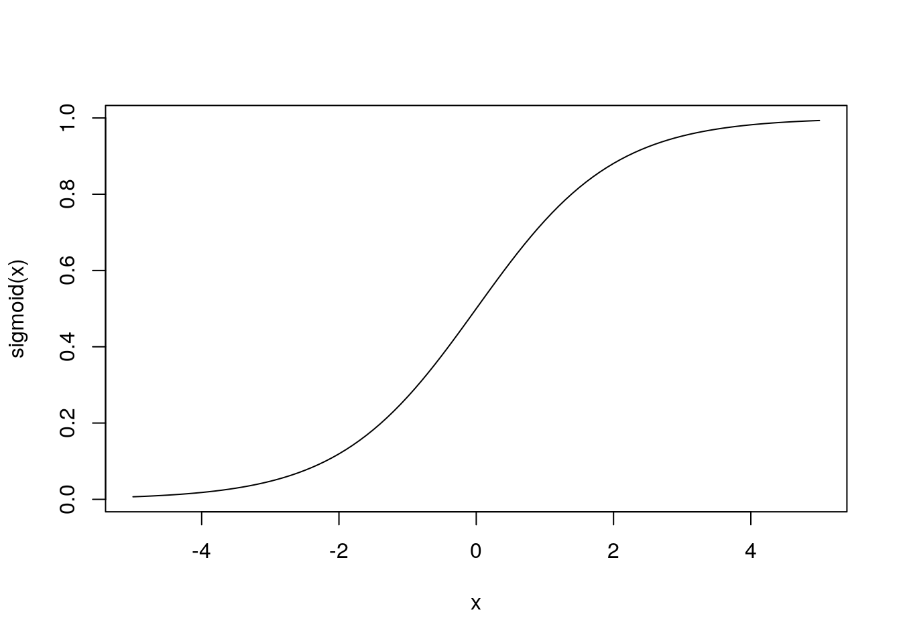
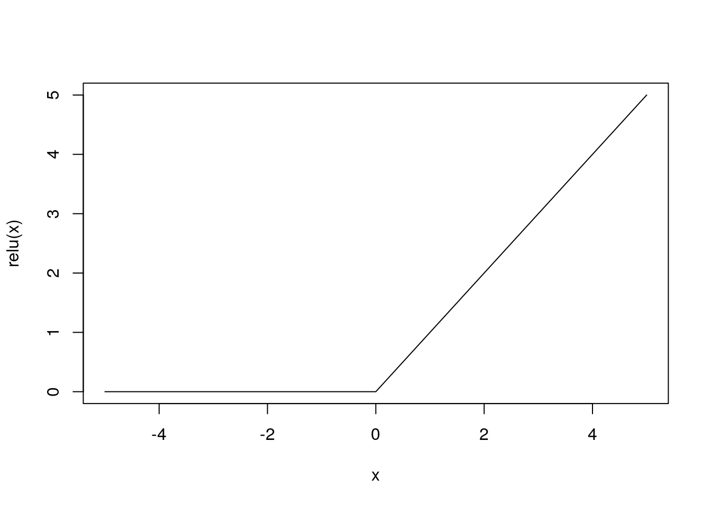
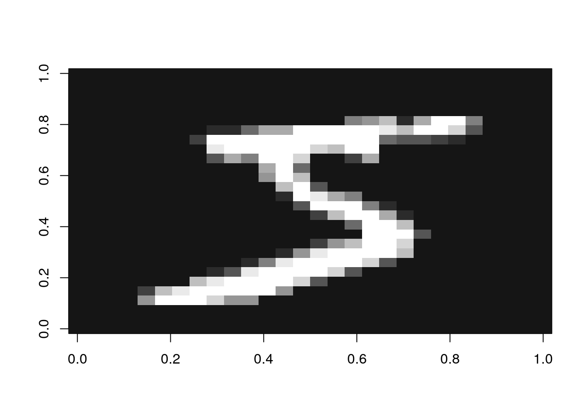
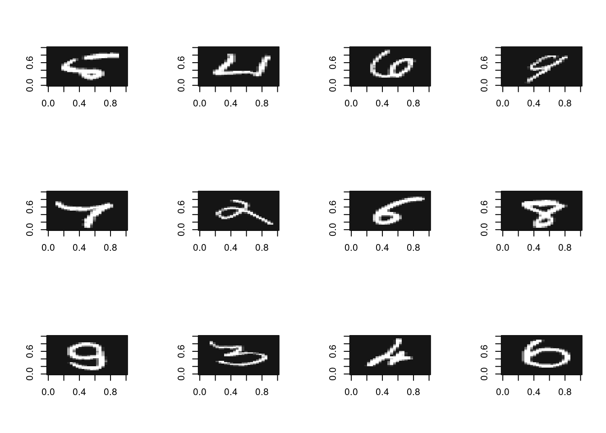

step_function <- function(x) as.numeric(x > 0)3章 ニューラルネットワーク
活性化関数
ステップ関数の実装
step_function(c(-1.0, 1.0, 2.0))[1] 0 1 1curve(step_function, -5, 5)
シグモイド関数の実装
sigmoid <- function(x) 1 / (1 + exp(-x))sigmoid(c(-1.0, 1.0, 2.0))[1] 0.2689414 0.7310586 0.8807971curve(sigmoid, -5, 5)
ReLU関数
relu <- function(x) ifelse(x > 0, x, 0)relu(c(-1.0, 1.0, 2.0))[1] 0 1 2curve(relu, -5, 5)
出力層の設計
ソフトマックス関数の実装
softmax <- function(a) {
exp_a <- exp(a)
exp_a / sum(exp_a)
}softmax(c(0.3, 2.9, 4.0))[1] 0.01821127 0.24519181 0.73659691オーバーフローに関する問題
softmax(c(1010, 1000, 990))[1] NaN NaN NaN対策
softmax <- function(a) {
exp_a <- exp(a - max(a))
exp_a / sum(exp_a)
}softmax(c(1010, 1000, 990))[1] 9.999546e-01 4.539787e-05 2.061060e-09手書き数字認識
MNISTデータセットのダウンロード、読み込みにdslabsパッケージを使う。
ディレクトリmnist_dirにデータをダウンロードすることにする。
mnist_dir <- "input/mnist/"
file.exists(mnist_dir)[1] TRUEデータをダウンロードして読み込む。
mnist <- dslabs::read_mnist(download = TRUE, destdir = mnist_dir)一度ダウンロードすれば、以降はダウンロードしたディレクトリからデータを読み込める。
mnist <- dslabs::read_mnist(path = mnist_dir)データ構造を確認
str(mnist)List of 2
$ train:List of 2
..$ images: int [1:60000, 1:784] 0 0 0 0 0 0 0 0 0 0 ...
..$ labels: int [1:60000] 5 0 4 1 9 2 1 3 1 4 ...
$ test :List of 2
..$ images: int [1:10000, 1:784] 0 0 0 0 0 0 0 0 0 0 ...
..$ labels: int [1:10000] 7 2 1 0 4 1 4 9 5 9 ...MNIST画像を表示してみる。
img_show <- function(img) {
image(matrix(img, nrow = 28)[, 28:1], col = gray(1:12 / 12))
}ラベルを確認
mnist$train$labels[1][1] 5画像を表示
img_show(mnist$train$images[1, ])
学習済みのパラメータ、sample_weight.pklをダウンロード
url <- "https://github.com/oreilly-japan/deep-learning-from-scratch/raw/master/ch03/sample_weight.pkl"
download.file(url, "input/sample_weight.pkl")reticulateパッケージのpy_load_object関数を使ってpickleファイルを読み込む。
network <- reticulate::py_load_object("input/sample_weight.pkl")中身を確認
str(network)List of 6
$ b2: num [1:100(1d)] -0.01471 -0.07215 -0.00156 0.122 0.11603 ...
$ W1: num [1:784, 1:50] -0.00741 -0.0103 -0.01309 -0.01001 0.02207 ...
$ b1: num [1:50(1d)] -0.0675 0.0696 -0.0273 0.0226 -0.22 ...
$ W2: num [1:50, 1:100] -0.1069 0.2991 0.0658 0.0939 0.048 ...
$ W3: num [1:100, 1:10] -0.422 -0.524 0.683 0.155 0.505 ...
$ b3: num [1:10(1d)] -0.06024 0.00933 -0.0136 0.02167 0.01074 ...推論処理を行うニューラルネットワークの実装
rep_row <- function(x, n) matrix(rep(x, n), n, byrow = TRUE)
predict <- function(network, x) {
n <- nrow(x)
if (is.null(n)) n <- 1
a1 <- x %*% network$W1 + rep_row(network$b1, n)
z1 <- sigmoid(a1)
a2 <- z1 %*% network$W2 + rep_row(network$b2, n)
z2 <- sigmoid(a2)
a3 <- z2 %*% network$W3 + rep_row(network$b3, n)
softmax(a3)
}推論を実行
library(tidyverse)# 正規化
images <- mnist$test$images / 255
preds <- 1:nrow(images) %>%
map(~ predict(network, images[., ])) %>%
map_int(which.max) - 1head(preds)[1] 7 2 1 0 4 1認識精度
accuracy <- mean(preds == mnist$test$labels)
accuracy[1] 0.9352誤認識した画像を確認
misrecognitions <- tibble(actual = mnist$test$labels, pred = preds) %>%
mutate(i = row_number(), .before = 1) %>%
filter(actual != pred)
misrecognitions %>% head(12)# A tibble: 12 × 3
i actual pred
<int> <int> <dbl>
1 9 5 6
2 34 4 6
3 67 6 2
4 93 9 4
5 125 7 4
6 150 2 9
7 218 6 5
8 234 8 7
9 242 9 8
10 246 3 5
11 248 4 2
12 260 6 0par(mfrow = c(3, 4))
misrecognitions %>%
head(12) %>%
pull(i) %>%
walk(~ img_show(mnist$test$images[., ]))
バッチ処理による実行
batch_size <- 100
preds2 <- seq(1, nrow(images), batch_size) %>%
map(~ predict(network, images[.:(. + batch_size - 1), ])) %>%
reduce(rbind) %>%
apply(1, which.max) - 1
identical(preds, preds2)[1] TRUE